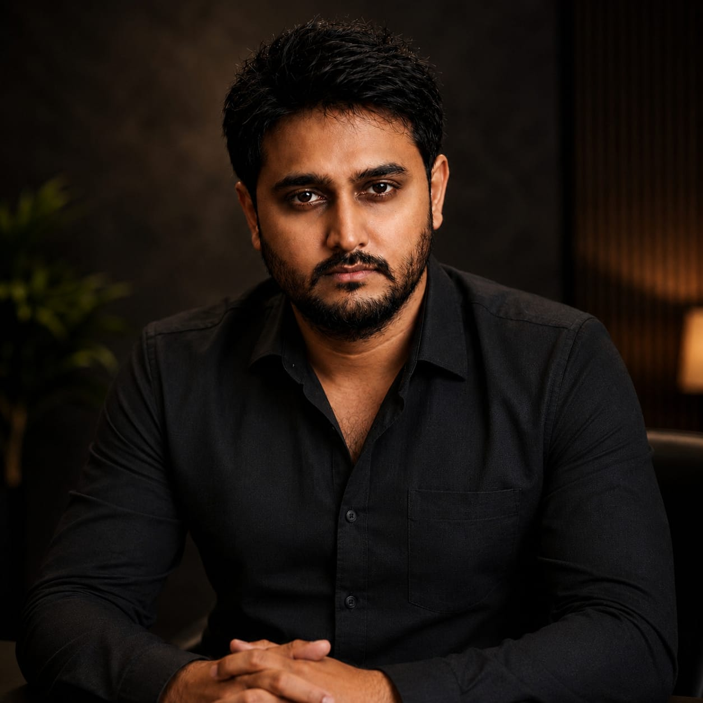
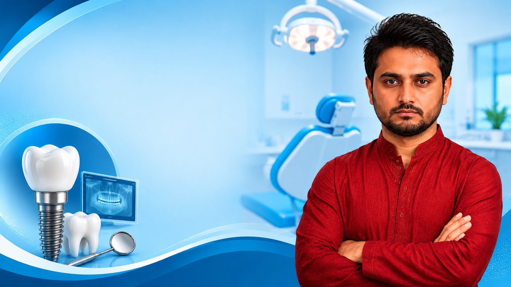

Preventive & conservative
Emphasis on prevention, early discussion of concerns and careful treatment planning.
Dentist | Founder – Gupta Dental Clinic | Healthcare Entrepreneur


Dr. Pratikshit Anand is a dentist and the founder of Gupta Dental Clinic – Aesthetic Smile & Implant Centre, located in Barganda, Giridih, Jharkhand. He believes quality dental treatment goes beyond relieving pain or improving appearance: it restores oral health, improves confidence and builds lasting relationships based on trust.
His approach focuses on accurate diagnosis, transparent communication, thoughtful treatment planning and contemporary dental techniques.
Emphasis on prevention, early discussion of concerns and careful treatment planning.
Interest in restorative dentistry, aesthetic care, smile makeovers and implant-supported restorations.
Clinical interests include root canal treatment and microscope-assisted endodontics and rehabilitation.
Dr. Anand is interested in sustainable dental practices, improving clinical systems and responsible use of technology in modern healthcare. His professional engagement on LinkedIn covers clinical insights, practice management, digital transformation, leadership and building healthcare institutions in Tier-2 cities.
His vision is to make advanced and dependable dental care more accessible across regional India.
“Dentistry is not just about treating teeth. It is about restoring confidence, preserving health and earning the trust of every patient.”
At Gupta Dental Clinic, Barganda, Giridih, this philosophy guides ethical, personalised and modern dental care.